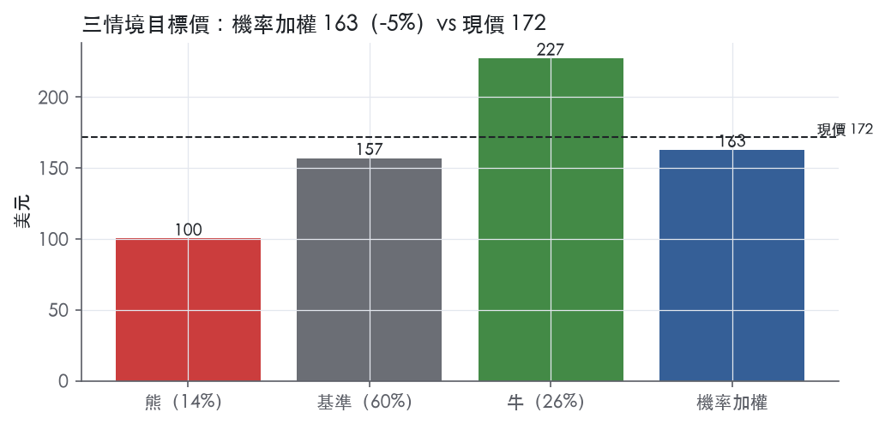
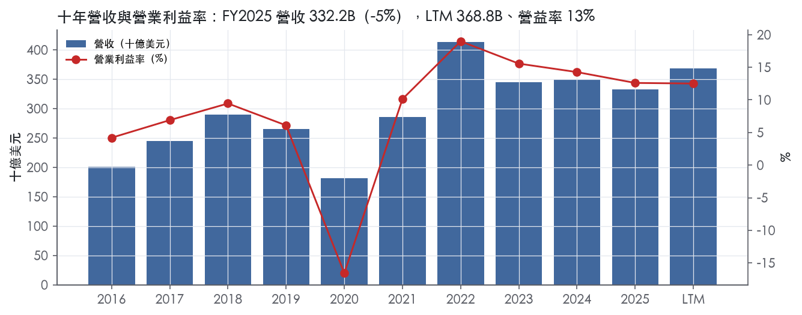
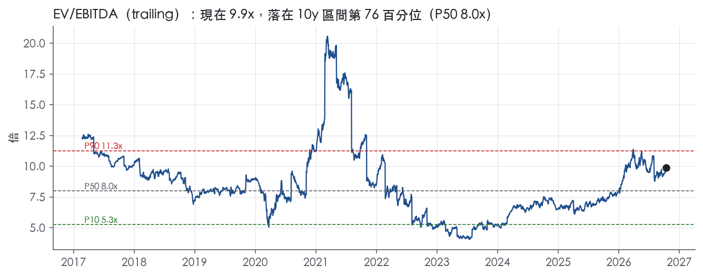
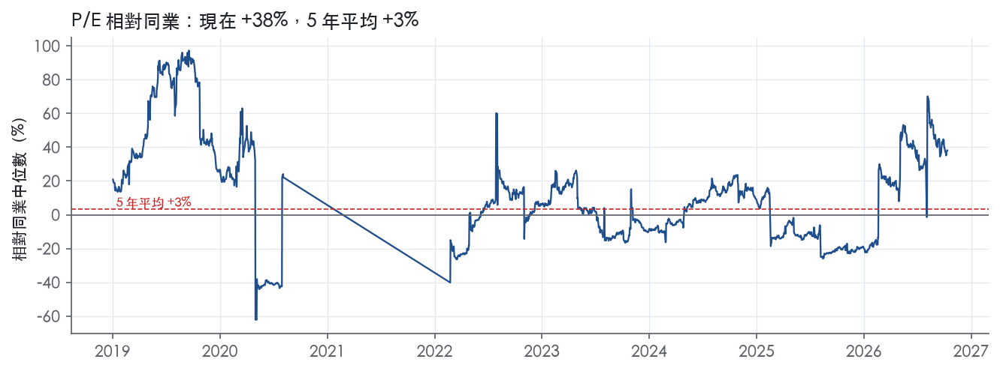
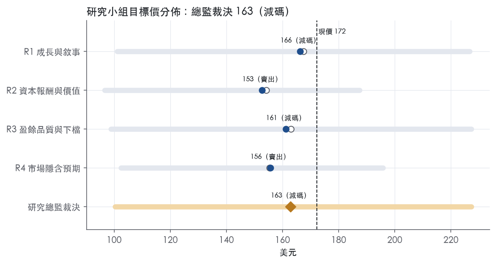
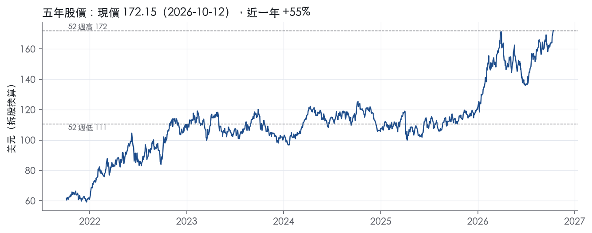

評等總表 › 能源 › XOM
高點已入價，量補不回價，看空｜評等 減碼｜目標價 163
| 報告日 | 評等 | 目標價 | 當時股價 | 超額報酬 |
|---|---|---|---|---|
| 2026-10-12 | 減碼 | 163 | 172 | -13.2% |
| 2026-09-28 | 賣出 | 149 | 163 | -16.1% |
| 評等 | 減碼（邊界，鄰近賣出） |
| 12 個月目標價 | 163 美元 |
| 現價 | 172.15 美元（2026-10-12） |
| 預期報酬 | 股價 -5.4%＋股息 2.4%＝總報酬 -3.0%；同業籃門檻 10.2%，超額 -13.2% |
| 估值方法 | EV/EBITDA 8.0x，套在三年平均的EBITDA |
| 三情境 | 熊 100／基準 157／牛 227 |
| 研究流程 | 四位研究員兩輪辯論＋研究總監裁決 |
| 資料來源 | SEC EDGAR XBRL、Tiingo、FRED（全免費） |
高點已入價，量補不回價，看空（研究總監裁決，四位研究員兩輪辯論後）
評等 減碼（邊界，鄰近賣出）｜12 個月目標價 163 美元（總監三情境機率加權 167 與研究員中位數 158 各半）｜現價 172.15（2026-10-12）
預期報酬：股價 -5.4%＋股息 2.4%＝總報酬 -3.0%。同業籃門檻 10.2%，超額 -13.2%，離賣出的分界不到三個百分點，屬邊界評等（落在其他級距的機率約三成）。
估值方法：EV/EBITDA 8.0x，套在三年平均的EBITDA。三情境：熊 100（14%）／基準 157（60%）／牛 227（26%）。
什麼會讓研究總監改變看法：3Q26／4Q26 新聞稿仍寫中東擾動、2027Q1 季均 WTI 守在 90 以上，且 1Q27 總產量回到 4,988 koebd 以上、上游排除時間效應盈餘高於 1Q26 的 6,265M，代表量能補回價格，倍數上調到 9x 以上、轉中性；反之 4Q26 8-K 顯示 2027 資本支出不減而回購低於 20B，熊機率上調。
| 過去四季（實際，FY2026Q2） | 未來四季 | 第 5–8 季 | 第 9–12 季 | |
|---|---|---|---|---|
| 營收（B） | 368.8B | 398.4B | 358.6B | 369.4B |
| 營收成長 | 9.1% | 8.1% | -10.0% | 3.0% |
| 營業利益率 | 12.5% | 14.0% | 12.5% | 12.0% |
| EPS（美元） | 7.75 | 9.84 | 8.08 | 8.20 |
| EPS 成長 | 9.3% | 27.0% | -17.9% | 1.4% |
| 每股股息（美元） | 4.08 | 4.08 | 4.08 | 4.08 |
| P/E（現價） | 22.2x | 17.5x | 21.3x | 21.0x |
| 股息殖利率（現價） | 2.4% | 2.4% | 2.4% | 2.4% |
過去四季為申報數字；預測為研究總監的假設、程式計算。倍數與殖利率都用現價計算，用來看現價對應各期獲利的高低。
| 項目 | 上次（2026-09-29） | 這次（2026-10-13） | 變動 |
|---|---|---|---|
| 評等 | 賣出 | 減碼 | 變動 |
| 機率加權目標價（美元） | 149 | 163 | +9.4% |
| 超額報酬 | -16.1% | -13.2% | +2.9 pp |
| 目標倍數 | 8.0x | 8.0x | — |
| 未來四季營收成長 | 3.0% | 8.1% | +5.1 pp |
| 未來四季營益率 | 12.0% | 14.0% | +2.0 pp |
| 未來四季 EPS（美元） | 8.06 | 9.84 | +22.1% |
| 熊／基準／牛機率 | 16／56／28 | 14／60／26 | — |
程式計算；「未來四季」各自從當次報告的資料起點算。研究總監逐點說明見第八章「與上次報告比較」。
| 情境 | 機率（歷史） | 故事 | 未來四季營收成長 | 第 5–8 季營益率 | 倍數 | 目標價 | 股價漲跌 |
|---|---|---|---|---|---|---|---|
| 熊 | 14%（12%） | 擾動提前解除、WTI 走向本行下行 62，煉化價差翻負，投資比同業高 20% 迫使回購縮手、時間效應轉為實損，倍數退到 3 年 P50；對應風險表第 1、2、4、5 條 | 0.0% | 9.5% | 7.0x | 100 | -41.7% |
| 基準 | 60%（60%） | 2026Q4 為獲利高點，WTI 依本行路徑回到 76，中東產量回流與 FPSO 5 只部分抵銷價格，降本讓營益率守在 12.5%，倍數回自家 10 年 P50、對 CVX 溢價收斂 | 8.1% | 12.5% | 8.0x | 157 | -8.8% |
| 牛 | 26%（29%） | 中東擾動延續到 2027 年中，NTM 維持 2Q26 的利潤率、價差停在高檔，市場續付 1 年 P50 9.5x；XOM 中東產量仍關停、避險實損重演限制上行 | 13.0% | 15.0% | 9.5x | 227 | 32.0% |
目標價由程式依研究總監的驅動與倍數計算；機率由研究總監給定。括號內是歷史頻率：把這檔股票過去十年 12 個月報酬的波動形狀，置中在基準情境，結果落在各情境附近的比例。

四位研究員用不同方法各自估值，回應研究總監的質疑後交出第二輪，最後由總監逐點裁決。各研究員的主張見第七章，裁決理由見第八章，完整論證見《研究底稿》。
| 立場（一輪→二輪） | 加權目標價（一輪→二輪） | 評等（一輪→二輪） | 第二輪倍數 | 熊～牛目標價 | |
|---|---|---|---|---|---|
| R1 成長與敘事 | 看空→看空 | 167→166 | 減碼→減碼 | 8.0x | 101～227 |
| R2 資本報酬與價值 | 看空→看空 | 154→153 | 賣出→賣出 | 8.0x | 97～187 |
| R3 盈餘品質與下檔 | 看空→看空 | 163→161 | 減碼→減碼 | 8.0x | 99～227 |
| R4 市場隱含預期 | 看空→看空 | 155→156 | 賣出→賣出 | 8.0x | 102～196 |
| 研究總監裁決 | 看空 | 163 | 減碼 | 8.0x | 100～227 |
目標價由程式依各自的驅動與倍數計算；評等＝機率加權總報酬 − 同業籃門檻。
ExxonMobil 是一家垂直整合的石油、天然氣與石化公司，業務涵蓋原油天然氣探勘生產、提煉貿易運輸銷售原油天然氣石油產品石化產品及各類特殊產品，同時發展低碳新事業¹。公司成立於1882年、在紐澤西州登記，透過 Exxon、Esso、Mobil、XTO 等品牌在美國及全球多數國家經營或銷售產品¹。客戶端從一般消費者（加油站、潤滑油、化學品終端用戶）到工業用戶、電力公司、航運與航空業皆有涵蓋，公司在1Q26新聞稿中強調其在全球180多個國家服務客戶、擁有業界最大且最多元的整合型全球資產組合²。簡言之，XOM 是一家靠規模、整合煉化鏈與低成本資產組合賺取商品週期利潤的大型油氣公司。
公司依10-K揭露分為上游（Upstream）、能源產品（Energy Products）、化學產品（Chemical Products）、特殊產品（Specialty Products）及公司與融資（Corporate and Financing）五大報表單元³。從2Q26 YTD調整後盈餘結構看，上游貢獻最大，YTD2026調整後盈餘15,454M美元，遠高於能源產品的6,898M美元、特殊產品的1,620M美元及化學產品的1,324M美元，公司與融資則為虧損1,844M美元³。上游業務的成長引擎是蓋亞那（Guyana）與二疊紀盆地（Permian），公司稱計劃以9%年複合成長率推動二疊紀盆地產量成長至2030年，且2Q26創下逾2000年以來（排除中東擾動）最高上游產量，二疊紀盆地產量超過180萬桶油當量/日創紀錄³。能源產品涵蓋煉油、燃料、潤滑油與相關貿易優化，2Q26受惠美國灣岸高稼動率與創紀錄柴油產量³。低碳新事業（Low Carbon Solutions）則包含碳捕捉與封存、氫氨、低碳燃料、Proxxima樹脂系統、碳材料、低碳數據中心及鋰，屬於早期投資階段，10-K未揭露該業務單獨營收比重¹。公司持有逾8千項全球專利，但各分部獲利並不依賴單一專利或商標¹。
公司原文未在Item 1逐一列出地區營收拆分，但儲量揭露顯示美國、加拿大/其他美洲、歐洲、非洲、亞洲、澳洲/大洋洲均有生產性資產，2025年底總已探明儲量193.11億桶油當量，其中美國（已開發+未開發）合計約7,971M桶油當量規模最大，亞洲與蓋亞那所在的加拿大/其他美洲緊隨其後¹。公司全球員工約59%來自美國以外地區，涵蓋160多個國籍，反映其跨國營運屬性¹。銷售通路包括直銷工業與商業客戶、品牌加油站零售網絡、化學品與潤滑油的B2B供應鏈，以及LNG長期合約出口，例如Golden Pass LNG於1Q26首次自Train 1產出LNG，使美國LNG出口量較2025年增加5%²。地區與通路集中度高度仰賴中東、蓋亞那與美國二疊紀盆地三大供給來源，任何地緣擾動都會直接反映在上游與能源產品分部獲利上。
FY2025Q3營收85.29B美元、年增-5.2%，營益率12.9%，EBITDA 17.50B美元，淨利7.55B美元（dv相關數字）。FY2025Q4營收82.31B美元、年增-1.3%，營益率降至10.0%，EBITDA 15.91B美元，淨利6.50B美元，自由現金流5.23B美元，季末現金10.68B美元（ltm相關資料包數字）。FY2026Q1公司公布GAAP獲利4.2B美元，較去年同期7.7B美元大幅下滑，EPS為1.00美元（較去年同期1.76美元）；排除辨識項目後獲利4.9B美元（EPS 1.16美元），再排除估計時間效應後獲利8.8B美元（EPS 2.09美元），優於去年同期7.6B美元²。公司解釋1Q26不利估計時間效應為3.9B美元、辨識項目為0.7B美元，主因中東供給中斷導致已結算金融避險損失未被實體出貨抵銷²。1Q26營運現金流8.7B美元（排除保證金存款後為13.8B美元），自由現金流2.7B美元，資本支出6.2B美元（累計結構性成本節省達15.6B美元，當季再增0.6B美元）²。FY2026Q2（2Q26）營收跳升至116.02B美元、年增42.3%，GAAP獲利14.5B美元、EPS 3.48美元，調整後獲利14.7B美元、調整後EPS 3.52美元，營運現金流23.6B美元、自由現金流17.2B美元³。公司指出2Q26上游產量創下逾2000年以來最高紀錄（排除中東擾動）、二疊紀盆地產量創紀錄、蓋亞那第五艘FPSO已啟航，計劃4Q26投產並增加25萬桶/日產能³。公司並宣布第三季每股股利1.03美元，將於2026年9月10日支付給2026年8月17日收盤時在冊股東³。整體看，營收與獲利在1Q26因中東擾動與時間效應大幅波動後，2Q26明顯反彈，顯示公司現金流與獲利對地緣與商品價格事件的敏感度仍高。
公司執行長Darren Woods表示，公司自2018年以來持續執行的策略已成長優勢產量、優化營運、降低結構性成本並強化獲利能力，形成更具韌性、低成本的業務基礎，支撐2030年以後的獲利、現金流與股東價值成長²。公司強調其結構性成本節省累計達16.3B美元，超過所有其他國際石油公司總和，並計劃2026年投資規模較最接近的同業高出20%³。公司將二疊紀盆地產量以9%年複合成長率推進至2030年、視為超越所有競爭者的優勢資產³；蓋亞那新FPSO與Golden Pass LNG首船出口則被列為近期產能擴張的關鍵里程碑³²。10-K中公司亦將低碳方案（碳捕捉與封存、氫氨、低碳燃料、Proxxima樹脂、低碳數據中心、鋰）列為尋求在能源轉型中扮演領導角色的新事業引擎，並設定運營資產範圍一、二排放最終達到淨零的企業目標¹。整體而言，XOM的敘事是「傳統油氣現金牛＋低成本結構＋選擇性低碳新業務」的三層成長邏輯，短期獲利仍高度綁定上游產量與煉化價差，低碳業務規模尚小、對財報貢獻有限。股利與回購維持高比例股東回饋，反映管理層對自由現金流穩定性的信心，但1Q26的獲利大幅波動也顯示公司對中東地緣與衍生品時間效應的揭露敞口不容忽視。長期而言，蓋亞那與二疊紀盆地的量能擴張將是未來幾季營收與毛利率變化的主要觀察指標。

XOM 評為「無護城河」：十年數字顯示 ROIC 只是在資本成本上下震盪，我們找不到任何結構性優勢，能讓人有把握未來 5 年 ROIC 持續高於資本成本。公司在 10-K 寫明，石油、天然氣與石化本質上是商品業務，盈餘會受油氣與石化價格、煉油產品價差的顯著影響⁴。XOM 在同業中成本與執行力較好，但在商品價格決定報酬的行業，「比同業好」不等於「長期賺超額報酬」。趨勢判為穩定，理由有二：營運效率改善沒有轉化為穩定的超額報酬；能源轉型的侵蝕也還沒在數字上出現，評級沒有往任一方向移動的依據。
唯一有證據的來源是成本優勢，而且只是相對同業的優勢，不足以構成護城河。
未列入的類別
看不到；量化底稿直接否定了寬或窄護城河的假設。
既然本來就沒有護城河，以下因素決定的是 ROIC 長期落在資本成本之下的機率；我們判斷下行風險大於上行。
無護城河代表目標倍數不應相對同業溢價；我們建議以持平同業為上限，並用中段循環盈餘、而非 LTM 盈餘定價。現在 P/E 22.2x 位在 5 年分位 90.4%（現在分位），遠高於 5 年中位數 14.0x；EV/EBITDA 也已達 5 年 P90 的 9.9x；市場是在為週期頂部定價，沒有護城河支撐這個溢價延續。資產負債表與現金流的韌性，最多只能支撐倍數持平同業而不折價，不能拿來當溢價的理由。
| 指標 | 最新 | 十年平均 | 標準差 | 最低 | 最高 |
|---|---|---|---|---|---|
| ROIC | 10.5% | 10.2% | 9.8% | -10.6% | 28.0% |
| 營業利益率 | 12.6% | 8.2% | 9.3% | -16.6% | 19.0% |
| FCF 利潤率 | 7.1% | 6.8% | 4.6% | -1.4% | 14.1% |
| ROE | 11.0% | 11.7% | 10.7% | -12.9% | 30.7% |
程式計算。資本成本代理值（10 年債＋5%）：10.2%；ROIC 平均減資本成本：-0.0%；ROIC 有資料的 9 年中，高於資本成本 4 年。
LTM 營業現金流／淨利 1.82x、自由現金流／淨利 0.93x，兩項近三年與十年平均都維持在綠燈區（量化底稿：盈餘品質計分表）。應計比率長期為負值（LTM −5.8%、十年平均−5.7%），代表盈餘不是靠應計項目堆出來的，是乾淨的現金型盈餘。槓桿極低、利息保障倍數極高，資本配置紀律也強。唯一要扣分的是歷史淨利率在FY2019–FY2021之間劇烈跳動，以及FY2025應收帳款成長快於營收成長，但這兩者可以解釋為商品價格循環與營運資金季節性波動，不構成盈餘灌水。
現金持續跑在淨利前面，這是這張計分表最乾淨的訊號。LTM 營業現金流／淨利 1.82x、近三年平均 1.66x、十年平均 1.59x，三個期間都在綠燈的「≥1.00x」門檻之上，且沒有逐年惡化的趨勢（量化底稿：盈餘品質計分表）。自由現金流／淨利 LTM 0.93x 剛好站上綠燈的「≥0.90x」門檻，三年平均0.89x、十年平均0.80x 略低但仍遠高於「<0.60x」的紅燈線（量化底稿：盈餘品質計分表）。應計比率連續三個窗口都是負值，LTM −5.8%，代表淨利其實是被應計項目「壓低」而非「墊高」，和現金流數字互相印證（量化底稿：盈餘品質計分表）。年度資料也支持這個結論：FY2026Q2 單季 CFO 23.55B、淨利 14.53B，CFO 明顯高於淨利（資料包：最近八季表）。唯一的警訊是FY2025 應收帳款成長比營收成長快6.3個百分點，被程式標為黃燈，意味著當季營運資金有在吃盈餘，但單一年度6.3pp 還在「≤15pp」紅燈門檻以下，屬於觀察而非警報（量化底稿：盈餘品質計分表）。
2Q26 GAAP 每股盈餘 3.48 美元，調整後（non-GAAP）每股盈餘 3.52 美元，差距很小³。但拉到 YTD 2026，GAAP EPS 4.47 美元對比調整後 EPS 5.60 美元，差距明顯放大³。金額上看，YTD 2026 GAAP Earnings 18,708M 美元，Adjusted Earnings 23,452M 美元，調整項合計拉高了約 4.7B 美元的盈餘³。分部拆開看，Energy Products 部門 YTD2026 GAAP 盈餘只有 4,203M 美元，調整後卻是 6,898M 美元，這個分部的GAAP與non-GAAP落差最大³。新聞稿本身沒有把調整項目逐條列出金額明細（例如減損、重組、衍生品損益），只在附註中說明「both metrics share operational drivers but differ by adjusting items as described in the Adjusted Earnings/(Loss) definition」³。在沒有逐項明細的情況下，我判斷這個落差很可能來自存貨估價效應（inventory valuation effects）與衍生品按市值計價的時間性損益，這類項目在能源公司是常見的non-GAAP加回項，屬於「口徑差異」而非現金損失，但無法用本次拿到的新聞稿原文逐條證實金額。估值時應該意識到：如果只看GAAP數字，季度波動會被商品價格的時間效應放大，調整後數字更貼近營運趨勢，但調整後數字的「真實性」缺乏逐項揭露，不能全盤照收。
槓桿極輕，淨負債／EBITDA LTM 僅 0.42x，近三年平均 0.29x，遠低於1.50x的綠燈門檻，十年平均也只有1.00x（量化底稿：盈餘品質計分表）。利息保障倍數LTM 59.5x、近三年60.9x，付息能力完全不是問題（量化底稿：盈餘品質計分表）。快照數字也印證：淨負債 31.78B 美元、企業價值 739.65B 美元，槓桿占比極小（資料包快照：）。股東回饋方面，2Q26單季股東總回饋9.4B美元，其中股利4.3B美元、回購5.1B美元³；YTD資本支出13.0B美元，全部投入新增廠房與設備³。（股利＋回購）／淨利 LTM高達115.3%，三年平均109.6%，超過100%理論上代表現金回饋超過當期淨利（量化底稿：盈餘品質計分表）。但這不是舉債撐場——同期淨負債仍處於0.42x EBITDA的低水位，現金流／淨利也同時站在1.82x的高檔，代表這是現金流充沛下的主動加碼回饋，不是靠借錢發股利（量化底稿：盈餘品質計分表）。稀釋股數年變動LTM為−0.7%，代表公司在淨減少股數，回購確實有稀釋防禦效果（量化底稿：盈餘品質計分表）。
紅旗一：淨利率FY2019→FY2020跳動−18個百分點——這是真實的商品價格衝擊，不是會計操弄，但本次拿到的10-K Item 7原文節錄只到目錄與Item 1/1A商業與風險因子，沒有包含FY2020具體減損或一次性項目的MD&A文字，因此無法用原文逐一核對金額。年度表數字顯示FY2020淨利為−22.44B美元、營益率−16.6%，相較FY2019的6.1%確實是斷崖式下滑（資料包：年度表）。Item 1A風險因子中明確點出「Any material decline in oil or natural gas prices could have a material adverse effect on the Company's operations, results, financial condition」，說明這類價格驅動的淨利波動屬於公司商業模式的常態風險，不是盈餘品質問題⁴。我判斷這是一次性的油價崩跌（2020年公眾已知的需求衝擊）疊加可能的資產減損所致，屬於真實但非經常性的衝擊，estimator應該在跨週期估值時用週期中段（mid-cycle）盈餘取代單一谷底年度，而非對公司治理或盈餘品質打折。
紅旗二：淨利率FY2020→FY2021跳動+20個百分點——這是前一個紅旗的鏡像，是油價與煉油利差從谷底回升帶動的正常復甦，不是盈餘灌水。年度表顯示FY2021淨利回升至23.04B美元、營益率10.1%（資料包：年度表），和FY2022一路衝到28.0% ROIC、55.74B淨利的格局一致，呈現典型的商品循環擺盪而非結構性改善的錯誤訊號。兩個跳動合起來看，只是同一個油價循環的下半與上半，應該視為一次事件、不是兩個獨立的盈餘品質問題。
黃燈：應收帳款成長−營收成長FY2025為+6.3pp——程式只標黃燈，未到紅燈門檻（15pp），我判斷這是正常的季節性或客戶付款節奏波動，FY2025營收本身是下滑的（−5.0%，資料包：年度表），應收帳款成長快於營收下滑幅度可能只是基期效應，不需要特別打折。
SBC／營收無資料：計分表本欄全部空白，無法判斷股權薪酬對盈餘的稀釋程度，這是資料缺口而非紅旗，但也意味著「現金盈餘品質高」的結論沒有把SBC加回的影響納入考量，若SBC規模大，調整後FCF可能被高估。
估值應以GAAP盈餘為主軸、non-GAAP調整後數字作為交叉檢查，因為本次新聞稿沒有逐項揭露調整內容，YTD GAAP與Adjusted EPS落差（4.47 vs 5.60美元）大到不能忽略卻又無法逐筆驗證。現金流持續覆蓋淨利、槓桿極低、利息保障倍數極高，這三項支持估值倍數可以不打折、甚至可以忍受目前90%分位的歷史高倍數位置，因為盈餘品質本身沒有結構性瑕疵。唯一要留一手的是，歷史淨利率的大幅擺盪說明這是一個高度週期性的商品生意，估值模型應該用跨週期平均（如十年平均ROIC 10.5%附近而非單季峰值）而非當期LTM數字來錨定正常化盈餘，避免在油價高點把倍數套在一次性高峰盈餘上。
| 項目 | LTM | 近三年 | 十年 | 燈號 | 規則 |
|---|---|---|---|---|---|
| 營業現金流／淨利 | 1.82x | 1.66x | 1.59x | 綠 | ≥1.00x 綠、<0.80x 紅 |
| 自由現金流／淨利 | 0.93x | 0.89x | 0.80x | 綠 | ≥0.90x 綠、<0.60x 紅 |
| 應計比率（(淨利−CFO)／平均總資產） | -5.8% | -5.2% | -5.7% | 綠 | ≤0.0% 綠、>5.0% 紅 |
| SBC／營收 | — | — | — | — | ≤3.0% 綠、>8.0% 紅 |
| 淨負債／EBITDA | 0.42x | 0.29x | 1.00x | 綠 | ≤1.50x 綠、>3.00x 紅 |
| 利息保障倍數（營業利益／利息） | 59.5x | 60.9x | 38.8x | 綠 | ≥8.00x 綠、<3.00x 紅 |
| 稀釋股數年變動 | -0.7% | 0.9% | 0.4% | 綠 | ≤0.0% 綠、>3.0% 紅 |
| （股利＋回購）／淨利 | 115.3% | 109.6% | 79.7% | 綠 | ≥50.0% 綠、<0.0% 紅 |
| 應收帳款成長 − 營收成長（FY2025） | +6.3pp | — | — | 黃 | ≤5pp 綠、>15pp 紅 |
程式計算；燈號以 LTM（無則近三年平均）判定。
| 風險 | 觸發指標（看什麼數字、在哪裡看） | 對 EPS 的影響方向與粗略幅度 | 未來 12 個月發生機率（高／中／低） | 出處 |
|---|---|---|---|---|
| 1. 油價／天然氣價格週期性下跌 | WTI、Brent 現貨價；季報 Upstream earnings（is/cf 分部獲利） | 方向：負向、幅度大。FY2022 EPS 13.26 → FY2025 EPS 6.70，FY2020甚至轉虧為 -5.25（量化底稿：/FY2025/FY2020） | 高 | （依量化底稿年度數字推論） |
| 2. 中東地緣政治擾動＋衍生品時間效應錯配 | 8-K 揭露的 Identified Items 中「timing effects」金額；中東產量擾動描述 | 方向：負向、幅度中大。1Q26因此類因素拖累，GAAP EPS僅1.00美元、調整後時間效應前EPS 2.09美元，2Q26回升至3.48美元（EPS變動+2.48） | 中 | ²³ |
| 3. 大型成長項目（Guyana FPSO、Permian、Golden Pass LNG）執行與時程延遲 | FPSO啟航／投產公告日期；Permian production（koebd）是否符合9% CAGR指引 | 方向：負向、幅度中。第五艘FPSO若延後4Q26投產，將延後250 Kbd產能增量；2Q26 Permian已創紀錄逾1.8 Moebd，顯示指引執行中但有不確定性 | 中 | 8-K 財報新聞稿（2026-07-31） |
| 4. 煉化與石化價差（crack spread）劇烈波動 | Energy Products、Chemical Products 分部季度GAAP獲利 | 方向：雙向、幅度大。Energy Products 1Q26虧損1,262M美元、2Q26轉為獲利5,465M美元，單季波動近6.7B美元 | 中 | 8-K 財報新聞稿（2026-07-31） |
| 5. 資本支出擴張與股東回饋的現金流壓力 | 季度Cash Capex vs guidance；FCF相對股息+回購總額（9.4B美元/季） | 方向：負向、幅度中。2026資本支出規劃比最接近同業高20%，YTD已投入13.0B美元；淨負債已升至31.78B美元 | 中 | 8-K 財報新聞稿（2026-07-31） |
風險一：油價與天然氣價格週期性下跌是最大的盈餘波動來源。 公司獲利結構高度綁定上游商品價格，FY2022油價高峰時EPS達13.26美元、EBITDA 102.59B美元，到FY2025已滑落至EPS 6.70美元、EBITDA 67.86B美元（量化底稿年度數據）。更極端的案例是FY2020，油價崩跌導致公司全年虧損、EPS -5.25美元。目前trailing P/E來到22.2倍，已處於5年分位90.4%的歷史高位，顯示市場已把相對樂觀的油價與產量成長假設計入倍數，一旦油價回落，EPS與倍數可能同步收縮，形成雙重擠壓。監測方式很直接：每月看WTI/Brent現貨價與遠期曲線，以及每季Upstream segment earnings是否隨之同向變動。
風險二：中東地緣政治擾動透過衍生品時間效應放大短期盈餘波動，這點已在1Q26實際發生、是可驗證的風險²。 公司在1Q26財報中明確說明，中東供給中斷導致已結算的金融避險損失未能被實體出貨同步抵銷，造成不利時間效應約3.9B美元、辨識項目約0.7B美元，使GAAP EPS僅1.00美元，遠低於去年同期1.76美元²。進入2Q26後，公司表示「排除中東擾動」後上游產量創逾二十年新高，顯示中東供給中斷仍在發生，只是程度減輕，GAAP EPS回升至3.48美元³。這條風險的監測指標非常具體：每季財報的Identified Items表中「timing effects」與「中東擾動」描述，一旦該項目金額再度放大，代表地緣風險正在重新侵蝕當期盈餘。
風險三：大型成長項目若執行延遲，將直接衝擊公司對外承諾的產量成長故事，進而影響EPS成長性的估值溢價。 公司在2Q26財報中強調第五艘Guyana FPSO已啟航、計劃4Q26投產、增加250 Kbd產能，以及Permian產量以9%年複合成長率推進至2030年並創紀錄超過1.8 Moebd³。10-K儲量章節也揭露Guyana的Hammerhead項目在2025年才完成融資、Uaru與Whiptail仍在開發中，顯示後續還有多個環節尚未完工⁵。這類超大型、多年期海上與陸上開發項目天然存在時程風險，只要FPSO投產公告延後、或Permian季度產量不達9% CAGR軌跡，市場會立即下修公司的成長溢價。監測方式：每季新聞稿中的production koebd數字與公司自訂的里程碑公告日期。
風險四：煉化與石化價差的劇烈波動，使Energy Products與Chemical Products分部獲利呈現高振幅擺動，是最容易被低估的近因風險。 2Q26財報顯示Energy Products單季獲利從1Q26的虧損1,262M美元轉為獲利5,465M美元，波動幅度接近6.7B美元³。公司將此歸因於美國灣岸高稼動率與創紀錄柴油產量，但這同時說明該分部獲利對煉廠開工率、維修排程與區域裂解價差高度敏感，且方向可雙向³。Chemical Products同期也從110M美元躍升至1,131M美元³，顯示北美原料優勢與產品價差同樣是重要擺動因子。監測指標：每季Energy Products、Chemical Products的GAAP獲利絕對值變化，以及公開的美國灣岸煉油裂解價差。
風險五：資本支出擴張與高股東回饋承諾，在商品價格轉弱時可能壓縮自由現金流覆蓋率。 公司明確表示2026年規劃投資比最接近的國際石油公司高出20%，YTD已投入13.0B美元現金資本支出³，同時2Q26單季股東回饋達9.4B美元（股息4.3B美元加回購5.1B美元）³。資料包顯示淨負債已從FY2023的10.03B美元回升至目前的31.78B美元，若油價走弱導致FCF收縮（LTM FCF 30.55B美元），公司需要在繼續擴大資本支出、維持回購承諾與控制槓桿之間做取捨，任何削減回購的訊號都會被市場解讀為負面。監測指標：每季Cash Capex實際數對比guidance、FCF是否足以覆蓋股息+回購總額、淨負債/資本比（Note：10-K揭露淨負債佔資本比已從FY2023的4.5%升至FY2025的11.0%⁶）。
低碳新業務（碳捕捉與封存、氫氨、鋰、Proxxima樹脂、低碳數據中心）屬於早期階段，資本配置與回報時程不透明，可能形成未來資本錯置風險。 10-K列出這些業務依賴「未來市場因素，例如持續的技術進展、穩定的政策支持與及時的規則制定與許可」，顯示管理層自己也承認高度不確定性¹，但目前揭露不含該業務獨立的營收或資本回報指標，投資人難以單獨監測其是否侵蝕整體ROCE（目前Corporate total ROCE已從FY2023的15.0%降至FY2025的9.3%⁶）。
法律與環境負債規模具有未揭露的尾部風險。 公司採用1百萬美元的環境訴訟揭露門檻⁷，意味著低於此門檻的大量個案不會逐一揭露，一旦多起案件同時升溫或單一訴訟結果不利，可能形成未被市場充分定價的一次性費用，建議持續追蹤10-K Note 7（Litigation and Other Contingencies）每年揭露的訴訟總覽變化。
現價 172.15 對應 trailing（過去四季）P/E 22.2x、EV/EBITDA 9.8x、EV/EBITA 16.0x、EV/Sales 2.0x、FCF 殖利率 4.3%。主要估值倍數 EV/EBITDA 現在 9.9x，落在10 年區間第 76 百分位（P10／P50／P90 = 5.3x／8.0x／11.3x）。

把程式的機械基準預測放到現價下，市場付的前瞻倍數是：EV/EBITDA（未來四季） 9.5x、P/E（未來四季） 20.9x、EV/EBITDA（第 5–8 季） 9.3x、P/E（第 5–8 季） 20.4x。反推 DCF 顯示市價隱含未來五年營收年成長 11.7%（WACC 9.0%、終值成長 3.0%、FCF 利潤率 7.2%，SBC 不加回）。
| 倍數 | 現在 | 10 年 P10 | 10 年 P50 | 10 年 P90 | 現在分位 | 全期 P50 |
|---|---|---|---|---|---|---|
| P/E | 22.2x | 9.3x | 16.2x | 29.1x | 78.4% | 16.2x |
| EV/EBITDA | 9.9x | 5.3x | 8.0x | 11.3x | 75.7% | 8.0x |
| EV/EBITA | 16.3x | 6.8x | 13.8x | 30.1x | 63.8% | 13.8x |
| EV/EBIT | 16.3x | 6.8x | 13.8x | 30.1x | 63.8% | 13.8x |
| EV/Sales | 2.0x | 1.1x | 1.3x | 1.7x | 97.2% | 1.3x |
| P/S | 1.9x | 0.9x | 1.2x | 1.5x | 97.7% | 1.2x |
| P/FCF | 23.5x | 8.4x | 19.6x | 35.8x | 67.1% | 19.6x |
trailing 倍數（股價 ÷ 過去四季）；分位以每個交易日計算。
同業籃：CVX, COP, EOG, OXY, PSX（手動名單（playbooks/peers.yaml））。評等門檻 10.2%：同業「倍數不變下持有一年」的隱含報酬中位數（＝ FCF 殖利率 ×(1＋g)＋g，g 為 5 年營收年複合成長並夾在 −2%～8%），每家夾在 0～15%、P/E 低於 5 倍視為資料可疑而排除，中位數再限制在 10 年債到 10 年債＋5% 之間（同業原始中位數 14.7%）。
| 代號 | 市值 | 5 年營收 CAGR | 營益率 | ROIC | P/E | 5 年 P/E 中位數 | EV/EBITDA | P/FCF | 隱含報酬 |
|---|---|---|---|---|---|---|---|---|---|
| XOM | 707.9B | 12.9% | 12.5% | 10.5% | 22.2x | 14.0x | 9.8x | 23.2x | 12.7% |
| CVX | 424.8B | 14.8% | 14.9% | 6.9% | 20.4x | 15.4x | 8.1x | 15.7x | 14.9% |
| COP | 165.3B | 25.7% | 23.1% | 10.1% | 18.2x | 12.4x | 6.8x | — | 13.9% |
| EOG | 79.6B | 15.5% | 32.9% | 16.3% | 11.7x | 10.7x | 6.0x | 6.2x | 25.3% |
| OXY | 61.1B | 3.9% | 23.9% | 3.6% | 9.2x | 12.7x | 5.7x | 12.8x | 12.1% |
| PSX | 112.3B | 15.6% | — | — | 16.1x | 13.8x | — | — | 14.7% |
| 同業中位數 | 15.5% | 23.5% | 8.5% | 16.1x | 12.7x | 6.4x | 12.8x | 10.2% |
全部 trailing，程式以各公司 SEC XBRL 與 Tiingo 行情計算；第一列為本檔。
P/E 相對同業中位數：現在 38.1%，過去 1 年平均 15.5%、3 年 4.1%、5 年 3.4%；EV/EBITDA 相對同業中位數：現在 53.3%，過去 1 年平均 40.8%、3 年 19.3%、5 年 12.7%。

程式的機械基準（成長率從過去四季年增率三年收斂到 6%、利潤率持平）用 EV/EBITDA 10 年 P50（trailing） 估值得到 157（-8.9%），用現行倍數得到 197。這兩個數字只是參考點，不是本報告的目標價；研究員對這個定價的回應在第七章。
下表是每位研究員第一輪（各自獨立）與第二輪（回應研究總監的質疑後）的結果。目標價全由程式依各自的假設計算。
| 立場（一輪→二輪） | 加權目標價（一輪→二輪） | 評等（一輪→二輪） | 第二輪倍數 | 熊～牛目標價 | |
|---|---|---|---|---|---|
| R1 成長與敘事 | 看空→看空 | 167→166 | 減碼→減碼 | 8.0x | 101～227 |
| R2 資本報酬與價值 | 看空→看空 | 154→153 | 賣出→賣出 | 8.0x | 97～187 |
| R3 盈餘品質與下檔 | 看空→看空 | 163→161 | 減碼→減碼 | 8.0x | 99～227 |
| R4 市場隱含預期 | 看空→看空 | 155→156 | 賣出→賣出 | 8.0x | 102～196 |
| 研究總監裁決 | 看空 | 163 | 減碼 | 8.0x | 100～227 |
目標價由程式依各自的驅動與倍數計算；評等＝機率加權總報酬 − 同業籃門檻。
分歧度：第一輪 加權目標價 154～167（區間＝現價的 8%）· 倍數 7.5～8.5x · 立場 看空×4（方向一致）；第二輪 加權目標價 153～166（區間＝現價的 8%）· 倍數 8～8x · 立場 看空×4（方向一致）。

| 研究員 | 第二輪主張 | 堅持的理由 |
|---|---|---|
| R1 成長與敘事 | 看空，倍數 8.0x；第二年營收 −12%，營益率守在 12.5%。 | 公司累計 16.3B 美元結構性節省，營益率不會回到十年中位數 9.8%。 |
| R2 資本報酬與價值 | 看空，倍數 8.0x；結構性節省加量能讓第二年營益率到 13.5%。 | 股數只減 2.5%：股利加回購已超過淨利，回購計畫附市況條件。 |
| R3 盈餘品質與下檔 | 看空，倍數 8.0x，與 CVX 8.1x 同檔；盈餘真實但在高點。 | 1Q26 的 0.7B 美元是已結算避險實損，調整後盈餘不應加回。 |
| R4 市場隱含預期 | 看空，倍數 8.0x；市場在賭高點營益率不回落與個股溢價。 | XOM 資本密集度上升，自由現金流比 CVX 差，倍數只給與 CVX 平價。 |
每位研究員的逐條回應與完整論證見《研究底稿》（XOM_研究底稿_2026-10-13.docx）。
| 分歧點 | R1 成長 | R2 價值 | R3 品質 | R4 預期 | 什麼資料會分出勝負 |
|---|---|---|---|---|---|
| Q5–Q8 營益率（op_margin_y2） | 12.5%：降本後四年全在 12.6% 以上 | 13.5%：結構性節省＋量能 | 12.0%：介於 FY2025 與十年中位 | 11.5%：資本密集度升、向中位回歸 | 1Q27／2Q27 財報（2027-05、08）單季營益率對照當季 WTI；4Q26 8-K（2027-02）的 2027 折舊與資本支出指引 |
| Q5–Q8 營收成長（rev_growth_y2） | −12%：中東回流抵銷部分價格 | −13%：回 FY2024–25 量級 | −11%：對應 WTI 76 | −10%：高基期但量能放大 | 4Q26／1Q27 新聞稿 Production (koebd)； 對 116.02B |
| NTM 營益率（op_margin_y1） | 14.5% | 13.0%：只給 4Q26 高點 | 14.0%：2Q26 16.9% 加時間效應迴轉 | 13.5% | 3Q26 財報（2026-10 下旬）單季營益率與調整項目表的時間效應迴轉金額 |
| 牛熊情境的形狀與機率 | 牛 9.5x／227／25%；熊 7.0x／101／15% | 牛 9.0x／187／30%；熊 6.5x／97／17% | 牛 9.5x／227／24%；熊 7.0x／99／14% | 牛 9.3x／196／31%；熊 7.0x／102／15% | 3Q26／4Q26 8-K 是否仍寫 Middle East disruptions；2027Q1 季均 WTI 是否守在 90 以上；4Q26 8-K 的 2027 回購指引 |
分歧一：Q5–Q8 營益率，裁 R1 的 12.5%。 Q5–Q8（2027Q3–2028Q2）對應本行前提 WTI 76，與 FY2024 的價格環境相當，當年營益率 14.3%；FY2025 油價更低仍有 12.6%。R1 指出十年裡營益率達 12.5% 以上的只有 FY2022–FY2025，四年全在降本計畫之後，累計結構性節省 16.3B³——這是公司自己的證據，所以不跟機械基準回歸十年中位 9.8%。但新聞稿也寫上游盈餘「partly offset by higher depreciation」³，Pioneer 與蓋亞那折舊全年計入，14.3% 不能照搬。R2 的 13.5% 要求全額折舊後仍逼近 FY2024，他沒有分部單位成本可以證明；且本行基準是 GDP 1.6% 的滯脹，能源產品與化學品價差首當其衝（Energy Products 1Q26 GAAP −1,262M、Chemical Products YTD2025 僅 566M³）。R4 的 11.5% 低於 FY2025 在更低油價下的 12.6%，他的理由是資本支出／營收升到 8.5%，但資本支出不過損益表、折舊才過，折舊我用更高的 D&A 比率另行處理。y3 取 12%（R1、R3），反映折舊續升。
分歧二：Q5–Q8 營收成長，裁 R4 的 −10%。 從 NTM 8.1% 出發，−10% 讓 Q5–Q8 營收落在 FY2024 的 349.58B略上方，正是「價格回 FY2024、量能比 FY2024 多」的組合：中東關停產量回流（2Q26 產量 4,514 koebd 對 4Q25 的 4,988 koebd³,²）、第五艘 FPSO 4Q26 投產增加 250 Kbd、Golden Pass 首船³,²。R2 的 −13% 把 Q5–Q8 壓到 FY2024 之下，等於假設量能增量全部無效，沒有給理由；R1 的 −12% 為中東回流修正過，但 FPSO 5 的增量仍漏在外面。R4 把 116.02B 的高基期和量能分開講，證據最完整。
分歧三：NTM 營益率，裁 R3 的 14%；NTM 營收採機械基準 8.1%（R2）。 NTM 是 2026Q3–2027Q2：3Q26 已結束未公布，7/31 新聞稿寫擾動仍在；4Q26 本行 WTI 97；2027 上半年走向 76。LTM 的 11.6% 被 1Q26 的 8.5%壓低，當季 3.9B 不利時間效應原文寫「unwinds in subsequent periods」²，迴轉進盈餘不進營收；2Q26 單季 16.9%是擾動期量級。兩個高點季、兩個回落季、加時間效應迴轉，14% 是對的。R2 的 13% 只給 4Q26 一季高點，漏了 3Q26；R1 的 14.5% 要 1H27 續高，那是牛情境。營收同理：R3 的 6% 等於 4Q26 就開始正常化，與本行 97 衝突；R1、R4 的 9% 要 1H27 續高；8.1% 剛好對應兩高兩低。R3 逐字引文證實 0.7B 是已結算避險實損、不應加回，支持用 GAAP 口徑看 NTM。
分歧四：牛熊情境，牛取 R1、熊取 R3。 股價 172.15 是 52 週高點、近一年報酬 55.5%（快照），能把它再推高三成的路徑只有中東擾動延續到 2027 年中，2Q26 已示範這條路：單季營益率 16.9%、盈餘 14.5B³。R1 的牛（NTM 16%、Q5–Q8 −5%／15%、1 年 P50 9.5x）就是這條路；R2 的牛（WTI 76 下靠量能守 15.5%）是另一個故事，需要分部成本資料才站得住；R4 的牛把 NTM 留在基準，擾動若延續會低估。熊情境四人都在 97–102，差別只在倍數：R2 的 6.5x 貼同業中位 6.4x，那是 E&P 樣本；R3 的 7.0x 是 3 年 P50，介於同業中位與 CVX 8.1x 之間，溢價收斂不歸零，且同時對應風險表第 1、2、4、5 條、觸發點有日期。
漂移與總經偏離。 漂移表四人向中位數靠攏比例 −16%～24%，所有變動都對應我第一輪的意見並附證據，沒有要退回的第二輪漂移。四人的 macro_deviations 皆空，油價都走本行 97→76，接受。R2 的 V4、R3 的 Q4 已刪「樣本期利率低」的倍數理由，沒有人再用利率壓倍數；我的 8.0x 低於零報酬 8.7x，理由是個股溢價收斂，不是 10 年債 5.22。
與機械基準不同的驅動：
目標倍數 8.0x EV/EBITDA，套三年平均（mid_cycle）EBITDA。 錨是劇本指定的自家 trailing EV/EBITDA 10 年 P50 8.0x，對照錨是唯一整合型可比 CVX 8.1x（同業比較，trailing）。期間口徑：trailing 十年帶跨過兩個油價循環，配三年平均分母是劇本設計；分母含一個高點年（NTM）、兩個正常化年，所以不給 P50 以上溢價。相對同業：中位 6.4x 是 E&P 樣本，不是基準；XOM 對同業中位的 EV/EBITDA 溢價從 5 年平均 12.7% 擴到 53.3%、CVX 的 P/E 也從 5 年中位 15.4x 升到 20.4x（同業比較）——類股重估保留，只假設 XOM 相對 CVX 的個股溢價收回到平價（R4 的拆法）：護城河章評「無」、ROCE 15.0%→9.3%⁶、2026 投資比最接近 IOC 高 20%³、P/FCF 23.2x 對 CVX 15.7x（同業比較）。8.0x 低於現行 9.9x（5 年 P90）與市場隱含 Q5–Q8 的 9.3x，差距全是這段溢價。
機率從歷史基準率出發：與 R1 第二輪幾乎相同的牛熊距離，程式對照 29／60／12%。我向牛扣 3 點、向熊加 2 點，理由都是公司特有。牛：本行上行情境是 WTI 72，對 XOM 是負面價格衝擊，上行只剩地緣一條路，而這條路上 XOM 中東產量持續關停（4,514 對 4,988 koebd）、已結算避險實損會重演（1Q26 0.7B²），吃不到全部價格上行。熊：風險表第 5 條是公司自己的資產負債表變化，（股利＋回購）／淨利 LTM 115.3%（盈餘品質章）是回購被砍的前置條件。牛仍高於熊 12 個百分點，這是對研究部過去 22 份報告熊高於牛的修正。
市場對機械基準的 Q5–Q8 付 9.3x，那套基準假設 Q5–Q8 營收 +7%、營益率 10.7%；我們的差在營收驅動——價格 97→76 讓 Q5–Q8 營收 −10%——利潤率我們反而比基準高，所以盈餘端差距是價格，不是成本。倍數端 8.0x 對 9.3–9.5x，是 XOM 相對 CVX 的個股溢價。立場看空；程式評等依機率加權總報酬減門檻 10.2% 落在減碼，與立場一致——加權目標價低於現價，2.4% 股息率（快照）補不回門檻。
現價 172.15 → 點估目標價 157 → 機率加權目標價 167 → 目標價 163，差距拆成五段：成長順延 -0 美元（市場現行倍數 8.7x 一年後持平、獲利照機械基準）；倍數差 -15 美元（總監倍數 8.0x vs 市場持平倍數 8.7x，同一機械基準預測）；盈餘差 -0 美元（總監預測的三年平均EBITDA 80.2B vs 機械基準 79.6B，同一倍數）；情境不對稱 +10 美元（機率加權減點估）；研究小組平均 -4 美元（總監機率加權 167 與研究員第二輪中位數 158 各半）。各段相加等於目標價減現價。本階段未接賣方共識，差距以市場隱含預期為對照。
| 驅動 | 機械基準 | 研究總監 | 差異 |
|---|---|---|---|
| 未來四季營收成長 | 8.1% | 8.1% | ＝ |
| 第 5–8 季營收成長 | 7.0% | -10.0% | -17.0 pp |
| 第 9–12 季營收成長 | 6.0% | 3.0% | -3.0 pp |
| 未來四季營益率 | 11.6% | 14.0% | +2.4 pp |
| 第 5–8 季營益率 | 10.7% | 12.5% | +1.8 pp |
| 第 9–12 季營益率 | 9.8% | 12.0% | +2.2 pp |
| D&A／營收 | 8.0% | 8.5% | +0.5 pp |
| 資本支出／營收 | 7.9% | 7.9% | ＝ |
| SBC／營收 | 0.0% | 0.0% | ＝ |
| 稅率 | 28.3% | 28.3% | ＝ |
| 股數年變動 | -3.6% | -2.5% | +1.1 pp |
研究總監只寫偏移，未寫的沿用基準。
| 期 | 營收 | 成長 | 營益率 | 營業利益 | EBITDA | EBITA | 淨利 | EPS | FCF | 期末淨負債 |
|---|---|---|---|---|---|---|---|---|---|---|
| 未來四季 | 398.4B | 8.1% | 14.0% | 55.8B | 89.6B | 55.8B | 39.5B | 9.84 | 41.8B | 27.7B |
| 第 5–8 季 | 358.6B | -10.0% | 12.5% | 44.8B | 75.3B | 44.8B | 31.6B | 8.08 | 33.7B | 31.8B |
| 第 9–12 季 | 369.4B | 3.0% | 12.0% | 44.3B | 75.7B | 44.3B | 31.2B | 8.20 | 33.4B | 36.1B |
程式依上表的驅動計算；季度用最近四季季節性分攤；不含營運資金變動。
估值方法：EV/EBITDA 8.0x，套在三年平均的EBITDA。研究總監目標倍數的錨：劇本指定自家 trailing EV/EBITDA 10 年 P50 8.0x（band.EV/EBITDA.10 年.P50）套三年平均 EBITDA，對照整合型可比 CVX 8.1x；分母含一個高點年故不給 P50 以上溢價；保留類股重估，只收回 XOM 對 CVX 的個股溢價（無護城河、ROCE 15.0→9.3%、投資比同業高 20%、P/FCF 23.2x 對 15.7x）。
計算：EBITDA（mid-cycle (avg of 3 yrs)） 80.2B × 8.0x＝EV 641.8B，減未來四季期末淨負債 27.7B＝權益價值 614.1B，除以mid-cycle (avg of 3 yrs)的股數 → 點估目標價 157（-8.8%）；隱含 P/E（未來四季）16.0x、P/E（第 5–8 季）19.4x、EV/EBITDA（第 5–8 季）8.5x、FCF 殖利率（第 5–8 季）5.5%。
總監三情境機率加權目標價 167，研究員第二輪中位數 158，兩者各半＝目標價 163；預期報酬 股價 -5.4%＋股息 2.4%＝總報酬 -3.0%；減評等門檻 10.2%（同業籃隱含報酬中位數（CVX, COP, EOG, OXY, PSX））＝超額報酬 -13.2% → 評等 減碼（超額 >+15% 買進、+5～+15% 加碼、±5% 中立、−5～−15% 減碼、<−15% 賣出）。同一份資料重開研究小組，超額約有正負四個百分點的雜訊（一個標準差，二十檔實測）；以此估計，評等落在其他級距的機率約三成。超額離賣出的分界不到三個百分點，應視為邊界評等。
| 情境 | 機率 | 未來四季成長 | 第 5–8 季成長 | 第 5–8 季營益率 | EBITDA（mid-cycle (avg of 3 yrs)） | 倍數 | 目標價 |
|---|---|---|---|---|---|---|---|
| 熊 | 14% | 0.0% | -15.0% | 9.5% | 63.1B | 7.0x | 100 |
| 基準 | 60% | 8.1% | -10.0% | 12.5% | 80.2B | 8.0x | 157 |
| 牛 | 26% | 13.0% | -5.0% | 15.0% | 95.6B | 9.5x | 227 |
| 主張 | 驗證日 | 看哪個數字 | 門檻 |
|---|---|---|---|
| FY2027Q2 單季營收跌破 100B，價格正常化發生 | 2027-08-07 | < 100B | |
| 2Q27 單季 GAAP 營益率落在中段假設區間 | 2027-08-07 | 11.5%–13.5% | |
| FY2026 現金資本支出落在指引內且全年回購達標，回購未被砍 | 2027-02-06 | 4Q26 8-K cash capex 與 share repurchases | capex 27–29B 且回購 ≥19B |
| 第五艘蓋亞那 FPSO 於 4Q26 投產且總產量高於 2Q26 | 2027-02-10 | 4Q26 新聞稿 FPSO 投產聲明與 Production (koebd) | 已投產且 > 4,514 koebd |
到期由程式結算（第 5 階段帳本）。
內文上標數字對應下列公司申報文件；未標上標的分析與判斷，是研究小組的觀點。報告中的每個數字都經程式逐一核對資料包或原文。
| 期 | 營收 | 成長 | 毛利率 | 營益率 | EBITDA | 淨利 | EPS | CFO | FCF | ROIC | 淨負債 | 稀釋股數 |
|---|---|---|---|---|---|---|---|---|---|---|---|---|
| FY2016 | 200.6B | — | — | 4.2% | 30.7B | 7.8B | 1.88 | 22.1B | 5.9B | — | 37.7B | 4.2B |
| FY2017 | 244.4B | 21.8% | — | 6.9% | 36.7B | 19.7B | 4.63 | 30.1B | 14.7B | 7.8% | 37.7B | 4.3B |
| FY2018 | 290.2B | 18.8% | — | 9.5% | 46.2B | 20.8B | 4.88 | 36.0B | 16.4B | 8.4% | 34.4B | 4.3B |
| FY2019 | 264.9B | -8.7% | — | 6.1% | 35.1B | 14.3B | 3.36 | 29.7B | 5.4B | 5.2% | 43.4B | 4.3B |
| FY2020 | 181.5B | -31.5% | — | -16.6% | 15.9B | -22.4B | -5.25 | 14.7B | -2.6B | -10.6% | 63.1B | 4.3B |
| FY2021 | 285.6B | 57.4% | — | 10.1% | 49.5B | 23.0B | 5.39 | 48.1B | 36.1B | 10.2% | 40.6B | 4.3B |
| FY2022 | 413.7B | 44.8% | — | 19.0% | 102.6B | 55.7B | 13.26 | 76.8B | 58.4B | 28.0% | 11.2B | 4.2B |
| FY2023 | 344.6B | -16.7% | — | 15.6% | 74.3B | 36.0B | 8.89 | 55.4B | 33.5B | 18.0% | 10.0B | 4.1B |
| FY2024 | 349.6B | 1.5% | — | 14.3% | 73.3B | 33.7B | 7.84 | 55.0B | 30.7B | 14.4% | 18.6B | 4.3B |
| FY2025 | 332.2B | -5.0% | — | 12.6% | 67.9B | 28.8B | 6.70 | 52.0B | 23.6B | 10.5% | 32.8B | 4.3B |
SEC XBRL；每股數據已依拆股換算到現在股數基準。EBITDA 空白 = 該年無形攤銷在 companyfacts 中缺 tag。
| 期 | 期末 | 推導 | 營收 | 毛利率 | 營益率 | EBITDA | 淨利 | EPS | CFO | FCF | 現金 | 總債務 |
|---|---|---|---|---|---|---|---|---|---|---|---|---|
| FY2023Q3 | 2023-09-30 | 90.8B | — | 15.3% | 18.3B | 9.1B | 2.25 | 16.0B | 11.0B | 32.9B | 41.3B | |
| FY2023Q4 | 2023-12-31 | Q4 | 84.3B | — | 12.9% | 18.6B | 7.6B | 1.88 | 13.7B | 7.5B | 31.5B | 41.6B |
| FY2024Q1 | 2024-03-31 | 83.1B | — | 15.2% | 17.4B | 8.2B | 2.06 | 14.7B | 9.6B | 33.3B | 40.4B | |
| FY2024Q2 | 2024-06-30 | 93.1B | — | 15.0% | 19.7B | 9.2B | 2.14 | 10.6B | 4.3B | 26.5B | 43.2B | |
| FY2024Q3 | 2024-09-30 | 90.0B | — | 14.7% | 19.5B | 8.6B | 1.92 | 17.6B | 11.4B | 26.9B | 42.5B | |
| FY2024Q4 | 2024-12-31 | Q4 | 83.4B | — | 12.1% | 16.7B | 7.6B | 1.77 | 12.2B | 5.4B | 23.0B | 41.6B |
| FY2025Q1 | 2025-03-31 | 83.1B | — | 14.2% | 17.5B | 7.7B | 1.76 | 13.0B | 7.1B | 17.0B | 37.6B | |
| FY2025Q2 | 2025-06-30 | 81.5B | — | 13.3% | 17.0B | 7.1B | 1.64 | 11.6B | 5.3B | 14.4B | 39.0B | |
| FY2025Q3 | 2025-09-30 | 85.3B | — | 12.9% | 17.5B | 7.5B | 1.76 | 14.8B | 6.1B | 13.8B | 42.0B | |
| FY2025Q4 | 2025-12-31 | Q4 | 82.3B | — | 10.0% | 15.9B | 6.5B | 1.51 | 12.7B | 5.2B | 10.7B | 43.5B |
| FY2026Q1 | 2026-03-31 | 85.1B | — | 8.5% | 14.0B | 4.2B | 1.00 | 8.7B | 2.2B | 8.4B | 47.7B | |
| FY2026Q2 | 2026-06-30 | 116.0B | — | 16.9% | 28.3B | 14.5B | 3.48 | 23.6B | 17.0B | 10.6B | 42.4B |
流量項目由 10-Q 的年初至今數拆成單季；Q4 = 年度 − 九個月。

本報告由 equity-desk 多代理系統產出，建置中版本，僅供內部研究與方法驗證，不構成投資建議。所有數字以 datapack.json 為準。